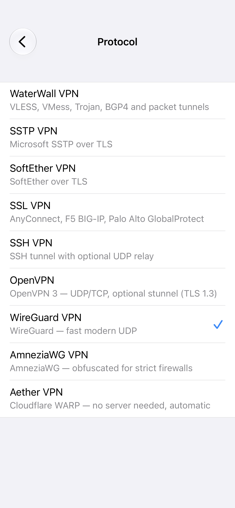
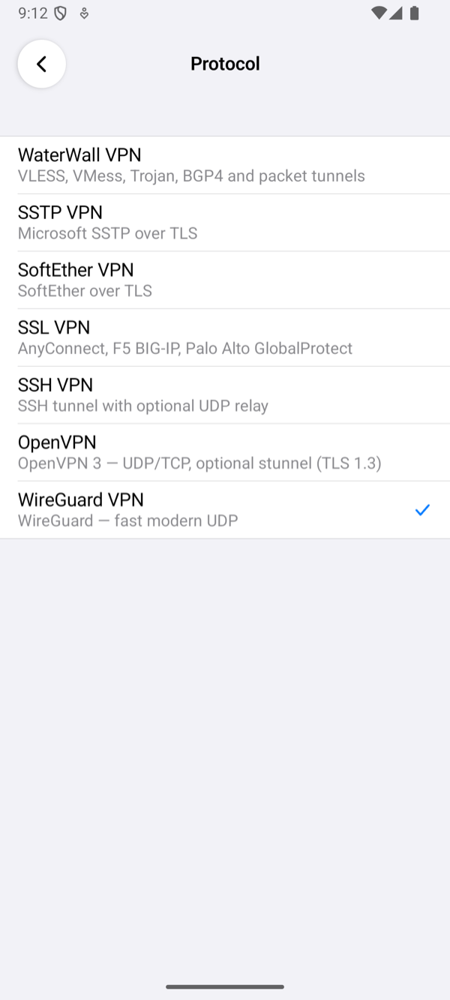
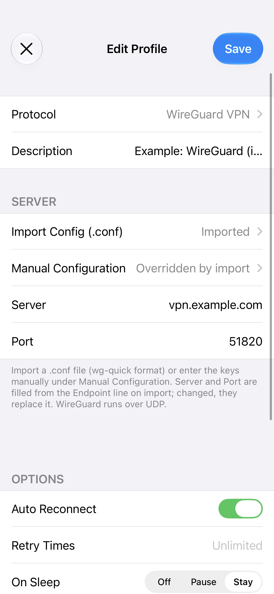
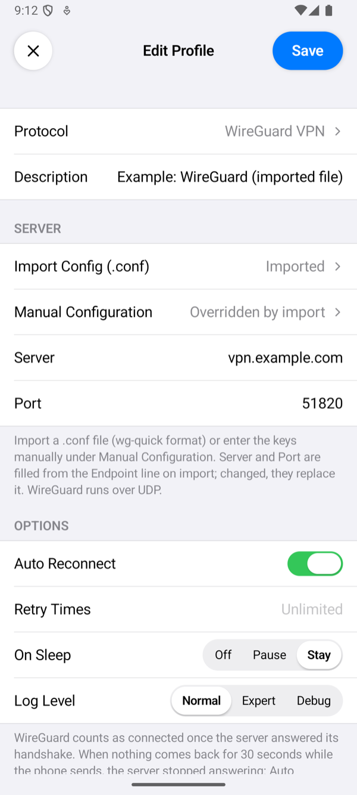
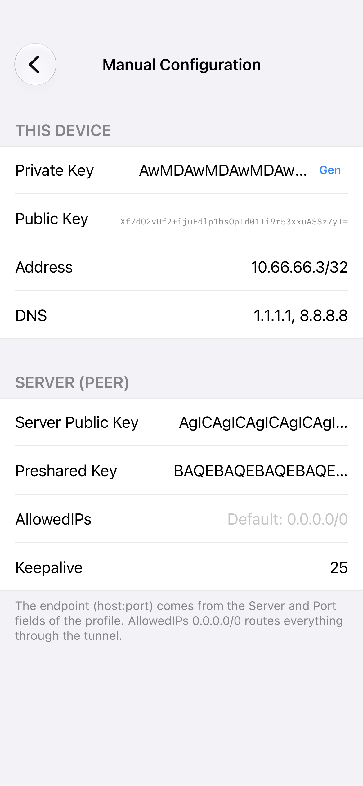
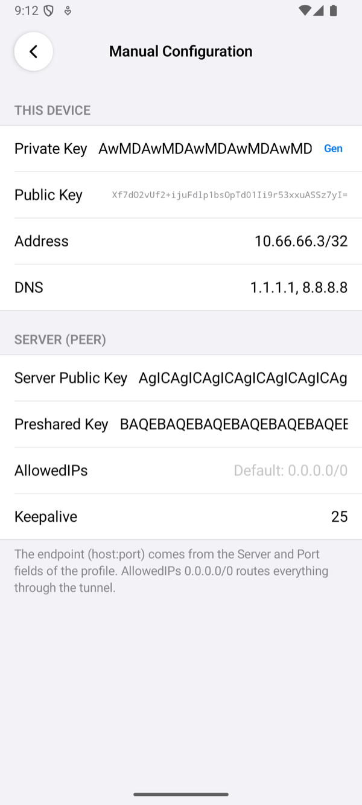
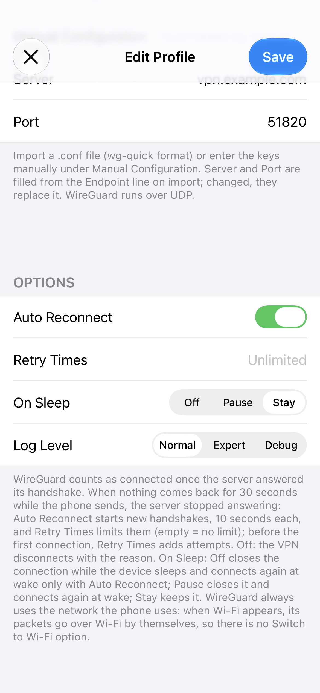
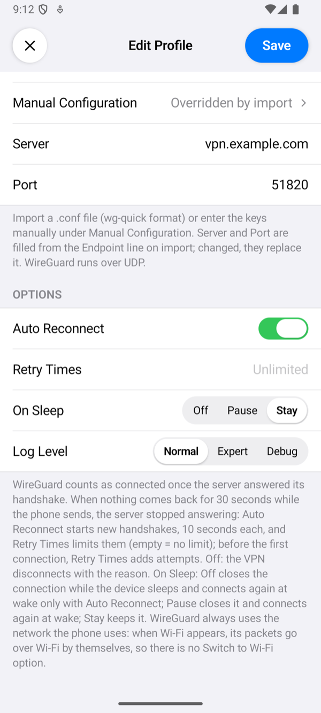
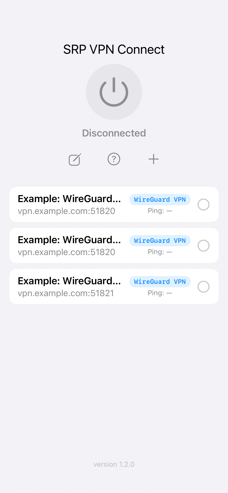
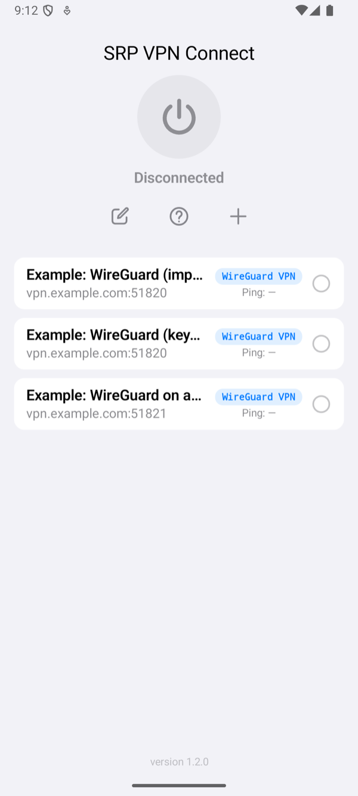

Setting Up the App
A WireGuard profile has the same fields on iPhone and Android. This page goes through them in the order the profile editor shows them.
The fields, defaults, footers and messages were read from the source code of both apps, and the screenshots were taken from them with example profiles and example keys. What each setting did against a real server is in Test results.
Add a profile
Tap + on the home screen, tap Protocol and choose WireGuard VPN; Port becomes 51820. Import the phone's .conf file or enter its keys, check the fields below and tap Save. Save names the first thing that is still missing instead of saving an incomplete profile: Enter the server address. or Import or enter a WireGuard configuration. Description, under Protocol, is optional: the profile's name on the home screen, which otherwise shows the server's name or address.


The configuration
There are two ways to give the app the phone's keys; an imported file wins over keys entered by hand.
- Import Config (.conf) opens the phone's files. The app takes a file in wg-quick format, with an
[Interface]and a[Peer]section, as the server guide makes it; it refuses a file without them: The file does not look like a WireGuard config (no [Interface]/[Peer] sections). The row then says Imported, and Server and Port fill themselves in from the file'sEndpointline. - Manual Configuration takes the same values one by one. Private Key is this phone's key: type it, or tap Gen for a new one. Public Key is worked out from it; tap it to copy it, and add it to the server as a peer. Address is the phone's address inside the tunnel, DNS its name servers. Under the server: Server Public Key, Preshared Key (optional, but it must match the server's for this phone), AllowedIPs (empty means 0.0.0.0/0: all IPv4 traffic) and Keepalive in seconds (empty means none). The endpoint is the profile's Server and Port. With a file imported, the row says Overridden by import.
The file and the keys are this phone's secrets: on iPhone the app keeps them in the Keychain, on Android in its encrypted store.




Server and Port
| Field | What to enter |
|---|---|
| Server | The server's name or address. An import fills it from the file's Endpoint; changed, it replaces it. |
| Port | The server's UDP port. An import fills it from the same line; changed, it replaces the file's port. Empty means the file's port, or 51820 for keys entered by hand. |
A WireGuard profile has no proxy setting: WireGuard runs over UDP, straight to the server.
Options


| Option | What it does |
|---|---|
| Auto Reconnect, Retry Times | The server answers nothing to a phone it does not take, so the app counts as connected only once the server answered its handshake: it waits 10 seconds for that, and Retry Times adds more attempts of 10 seconds before it gives up. While the VPN is up, nothing coming back for 30 seconds while the phone sends means the server stopped answering. Auto Reconnect (on by default) then starts new handshakes, 10 seconds each, until the server answers again; Retry Times limits them (empty means no limit). Without Auto Reconnect, the VPN ends with the reason: The server stopped answering: nothing came back for 30 seconds (auto reconnect is off). A server that restarts or is away for a few seconds is answered by WireGuard itself, without an attempt. |
| On Sleep | Stay (default) keeps WireGuard running while the device sleeps. Pause closes it and connects again on wake. Off closes it; on wake it connects again only with Auto Reconnect, otherwise the VPN ends with The connection was closed while the device slept. |
| Log Level | How much the connection log shows. Normal: the milestones: the server, its address and port, whether the profile has a keepalive and a preshared key, the handshake, network changes, and why a connection ended. Expert adds a line every 30 seconds with the time since the last handshake and the bytes received and sent. Debug adds WireGuard's own lines. No level writes a key. Tap the status under the power button to open the log. When the app gives up on a connection, a line starting with WireGuard: closing with reason: names the reason. |
There is no Switch to Wi-Fi When Available: WireGuard always uses the network the phone uses, and its packets go over Wi-Fi by themselves when it appears. On every change of network the app moves WireGuard's sockets to the new one.
Connect and check


Select the profile on the home screen and tap the power button. The status changes to Connected once the server has answered the handshake. The row of the profile then shows the time of one request through the tunnel. If the server does not answer, the app shows Connection Failed with the reason; Troubleshooting explains each message.